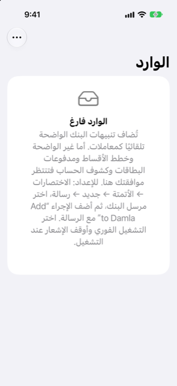

الدليل › تسجيل المال
الوارد
حيث ينتظر أي شيء غير واضح نقرة واحدة منك.
يحفظ الوارد رسائل البنك التي لم يتصرف Damla بشأنها من تلقاء نفسه - لأنها كانت غير واضحة، أو لأن التصرف بشأنها يلزم بأموال مستقبلية. لا شيء من الوارد يدخل دفاترَك حتى تنقر؛ كل عنصر مراجعة قصيرة.

متى تستخدمه
- عندما يعرض اليوم N بانتظار موافقتك.
- عندما لم تظهر دفعة كنت تتوقعها في النشاط.
- عندما ذكر تنبيهٌ بطاقةً أو حسابًا لا يعرفه Damla بعد.
خطوة بخطوة
- افتح اليوم وانقر N بانتظار موافقتك.
- انقر عنصرًا. يفتح في شاشة الإضافة العادية مع أن الرسالة قُرئت مسبقًا.
- تحقق مما وجده Damla ضمن "تحقق واحفظ". إن كان شيئًا ناقصًا، انقر أكمله واملأ الباقي في النموذج.
- انقر حفظ. يغادر العنصر الوارد بمجرد أن تحفظه.
- لتجاهل عنصر بدلًا من ذلك، انقره ثم انقر تجاهل.
- لإزالة عدة عناصر في وقت واحد، انقر تعديل في القائمة واحذفها.
إشعار كشف الحساب لا يعرض لك عملية مالية لحفظها: انقر راجع كشف الحساب لفتح مراجعة كشف الحساب. طبّقه وسيغادر الوارد.
لماذا تنتظر رسالة
- خطة أقساط: إنها تلتزم بأموال مستقبلية، لذا تحتاج إلى موافقتك.
- دفعة بطاقة: الرسالة لا تقول أي حساب دفعها.
- أرقام لا تطابق أي حساب بعد: أكملها مرة واحدة ويتعلم Damla تلك الأرقام للأبد.
- شراء بعملة ليس لدى Damla سعر صرف لها بعد: يسأل ما الذي خُطّت من البطاقة مقابله.
- احتمال تكرار لعملية دفع أُضيفت قبل لحظة: تجاهله إن كانت هي الشراء نفسه.
- رسالة لم يمكن قراءتها كتنبيه بنك على الإطلاق.
- إشعار كشف حساب، وهو يتعلق بفاتورة البطاقة، لا بعملية شراء.
من الجيد أن تعرف
- الرسالة نفسها التي تُسلَّم مرتين - اختصارٌ (Shortcut) عمل مرتين، أو نسخة مُعاد توجيهها - تنتظر مرة واحدة، لا مرتين.
- الرمز لمرة واحدة يُهمَل ولا يُحفَظ أبدًا.
- الرسالة التي لا تتعلق بالمال على الإطلاق لا تُحفَظ ولا تُدرَج، لذا لن تصل رسالة خاصة إلى الوارد أبدًا.
- التنبيه الذي يصل والهاتف مقفل ينتظر على الهاتف ويُضاف في المرة القادمة التي تفتح فيها التطبيق وتفتحه من القفل.
- العملية التي تحفظها من الوارد تُحفَظ بوصفها قادمة من تنبيه بنك، لذا تظهر في النشاط مثل أي عملية أضافها تنبيه غيرها.
التنبيهات الأخيرة
التنبيهات الأخيرة، في الإعدادات، هي سجل لآخر 50 تنبيهًا، الأحدث أولًا. لكل منها سبب قصير: أُضيف، ينتظر في الوارد (ولماذا)، مسجَّل مسبقًا، مُهمَل، أو مُسجَّل كملاحظة (فاتورة قادمة). استخدمه للتحقق من أن آليتك تعمل، ولرؤية سبب ذهاب الرسالة إلى حيث ذهبت.
ذو صلة
هل هناك شيء غير واضح أو ناقص؟ اكتب إلى support@raveniq.ai واذكر الصفحة.